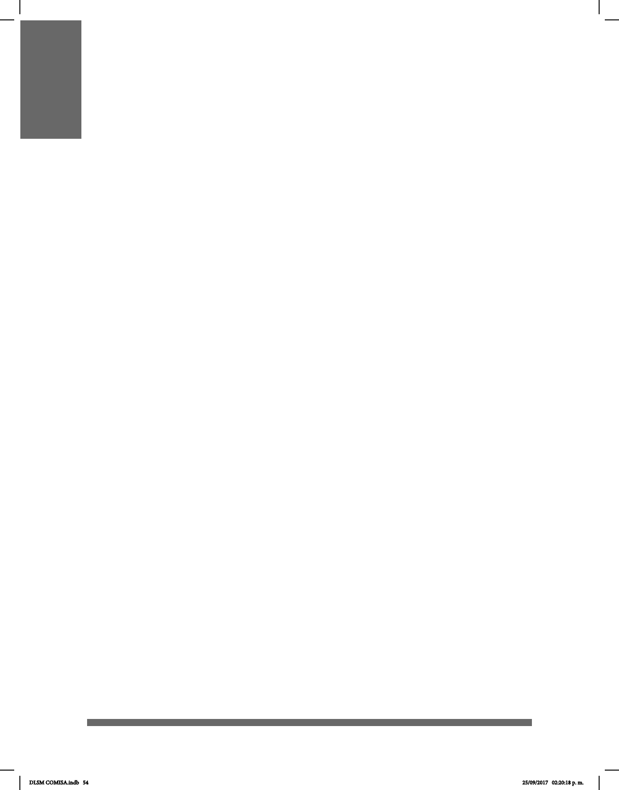

54
DEFINICIÓN DE LENGUA DE
SEÑAS MEXICANA
El Diario Ocial de la Federación en el apartado de la Ley General de las Personas
con Discapacidad, dene a la Lengua de señas como la lengua de una comunidad de
sordos, la cual consiste en: “una serie de signos gestuales articulados con las manos y
acompañados de expresiones faciales, mirada intencional y movimiento corporal,
dotados de función lingüística”. Y que además menciona que “forma parte del
patrimonio lingüístico de dicha comunidad y es tan rica y compleja tanto en gramática
como en vocabulario como cualquier lengua oral.”
Una lengua de señas es un lenguaje natural con gramática propia, capaz de expresar
el pensamiento a través del movimiento de las manos. Se trata también de la lengua
materna del sordo y su forma comunicativa natural. Como toda lengua, varía de una
comunidad a otra y tiene capacidad para crear su propio léxico; sin embargo,
actualmente, carece de remodicación escrita.
Como características adicionales, las lenguas de señas contribuyen al desarrollo de
capacidades para la lectura, la escritura y las matemáticas, facilitan la comunicación en
edades tempranas y son fáciles de aprender.
DLSM COMISA.indb 54 25/09/2017 02:20:18 p. m.